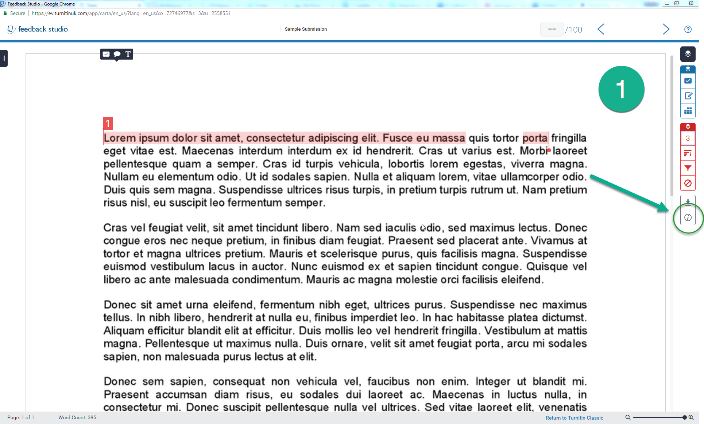
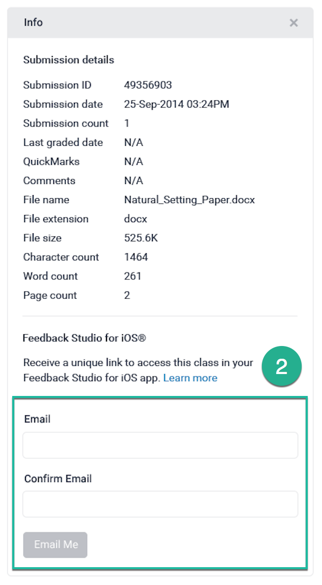
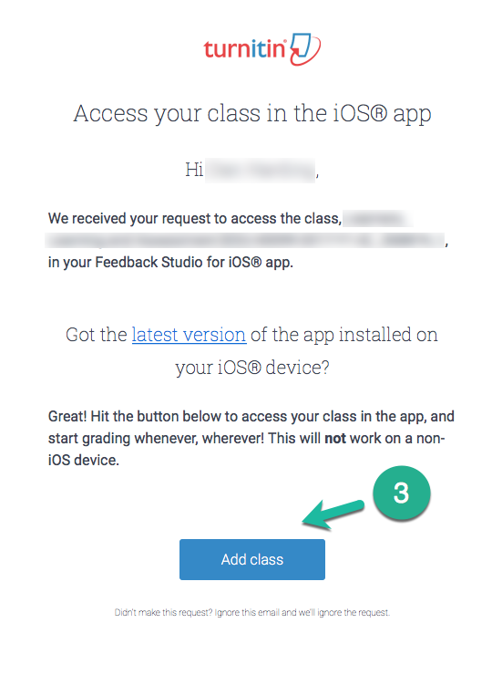

Step 1 - Adding Dropboxes to the Turnitin for iOS App
- From a desktop PC or Mac, sign in to the Keele Learning Environment (KLE) and navigate to the module which contains the Turnitin inbox you wish to mark student submissions for. If you are unsure how to do this, please see the guide at
https://www.keele.ac.uk/turnitin/accessingsubmissions. - From the Turnitin inbox, open any submission using the pencil icon (
 ).
). - On the right hand side of the document viewer, click the Information icon (
 ). Here, you'll find the Feedback Studio for iOS section.
). Here, you'll find the Feedback Studio for iOS section.
- Enter and confirm your email address and select the Email Me button.
- After checking that you have the most up-to-date version of the Feedback Studio for iOS app installed, access your email account on the same iPad you intend to use for marking.
- From the TurnitinUK email, select the Add Class button. This will take you to your class inside the Turnitin app.


